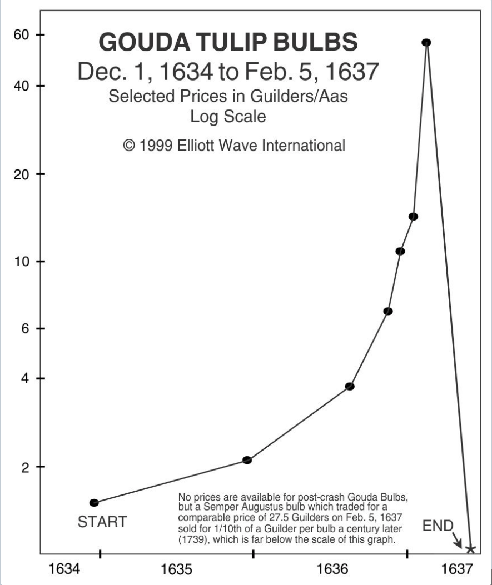
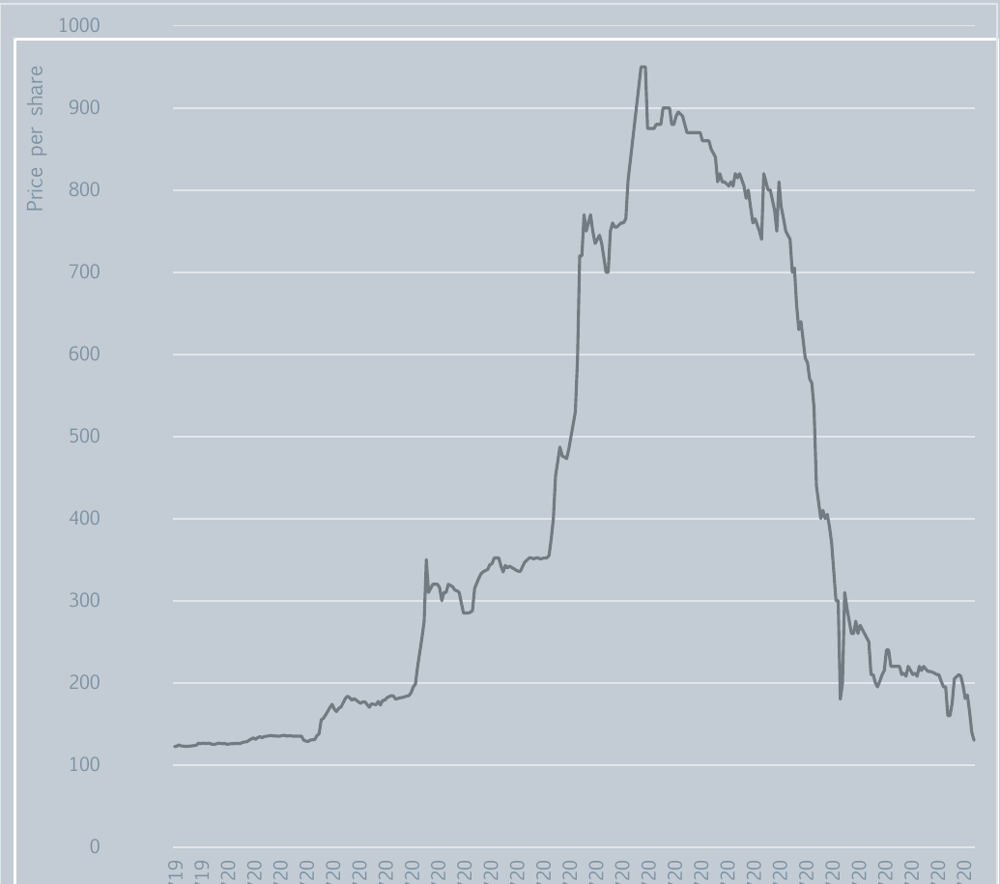
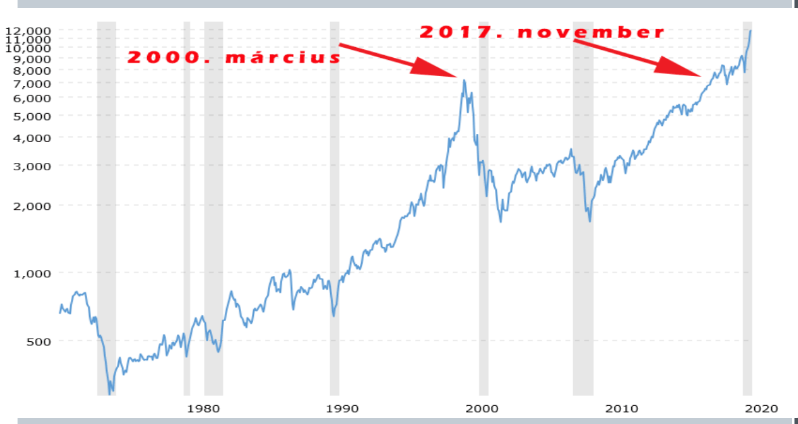
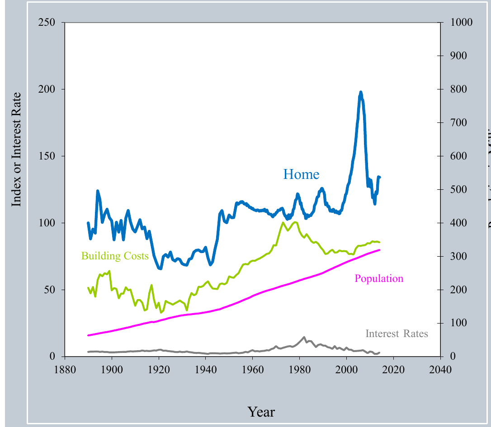
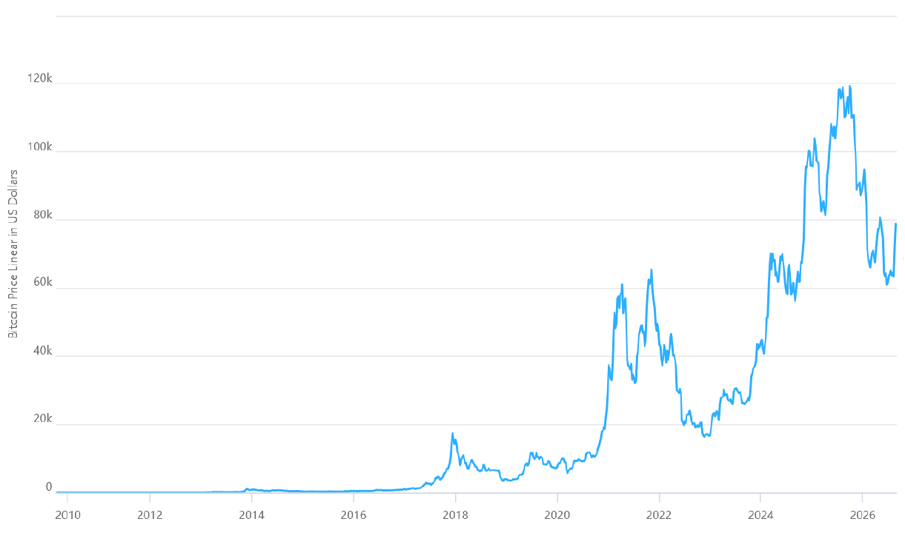
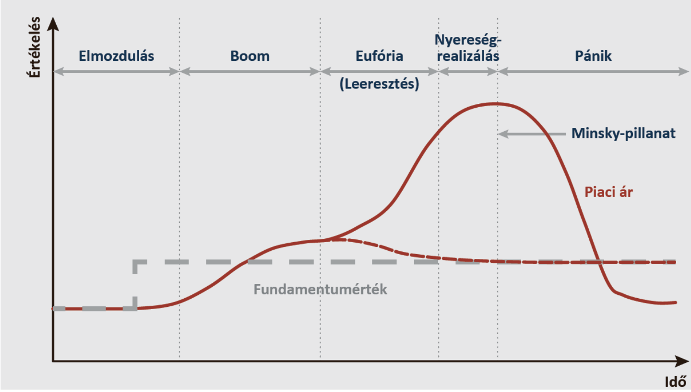
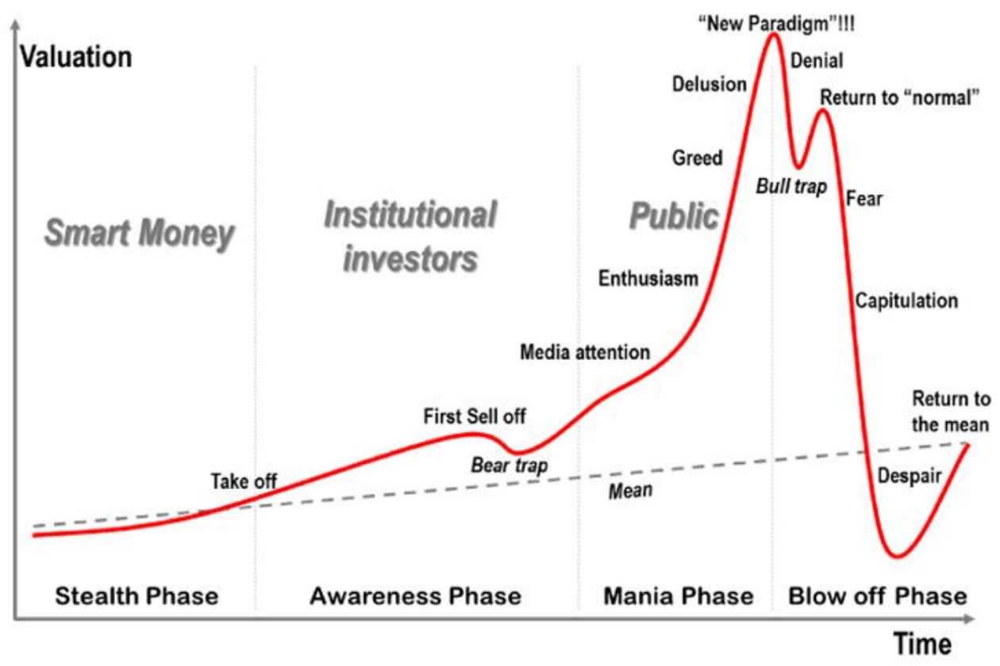
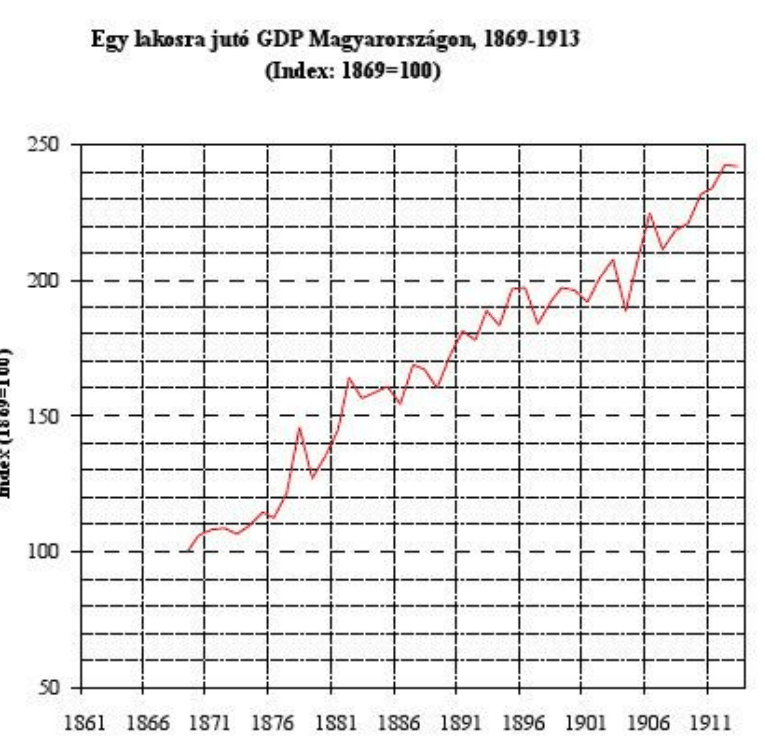
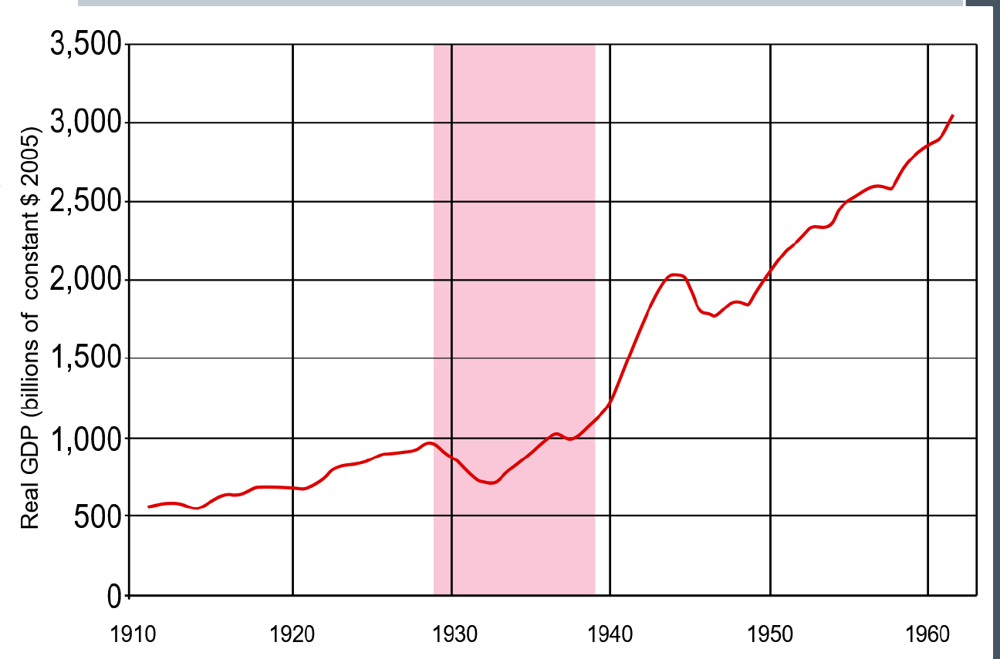

7. fejezet · diák: 116–133
Ciklikus ingadozás, buborékok, válságok
Egyszer fent, máskor lent. Az előző fejezet végén láttuk, hogy a pénzügyi rendszer fejlettsége és sérülékenysége együtt nő. Most a sérülékenységről lesz szó: hogyan fújódnak fel a buborékok, miért pukkannak ki, és miért érzi meg a válságot az is, akinek egy fillér megtakarítása sincs.
Nyitó eset: az első bankjegy és a pénzügyi rendszer két arca 116–118. dia
A holland Johan Palmstruch Svédországba költözött, és 1657-ben megalapította a Stockholms Bancót. Ez a bank bocsátotta ki Európa egyik első igazi papíralapú bankjegyét – bukása pedig a világ első, ma is létező központi bankjának, a mai nevén Sveriges Riksbanknak a megalapításához vezetett.
A bankjegy komoly innováció volt: a bank összegyűjtötte ügyfelei aranyát, és cserébe bankjegyet adott, amely bármikor beváltható volt a rajta szereplő mennyiségű aranyra. Palmstruch igazi trükkje az volt, hogy a bankja részleges tartalékkal működött: sokkal több bankjegyet adott ki, mint amennyi érméje volt. Ez rövid távon pénzbőséget hozott, aminek a háborúskodó svéd birodalom kezdetben örült – hosszabb távon viszont a bank fizetésképtelenségéhez vezetett.
Az ilyen helyzetek elkerülésére hozták létre a központi bankokat, amelyek máig a pénzügyi stabilitás őrei: vigyáznak arra is, hogy az emberek ne veszítsék el a megtakarításaikat a bankok felelőtlensége miatt.
A Riksbank 1968-ban, fennállásának 300. évfordulóján alapította a „közgazdasági Nobel-díjat” – hivatalos nevén a Sveriges Riksbank Alfred Nobel emlékére alapított közgazdaság-tudományi díját.
A fejezet kérdése: miért ismétlődnek újra és újra a pénzügyi buborékok és válságok, és hogyan lesz egy tőzsdei pánikból mindenkit érintő gazdasági válság?
Útiterv
A jó és a rossz
A pénzügyi rendszer előnyeit az előző fejezetben láttuk. A bonyolultabb pénzügyi rendszerek azonban rontják a gazdaságok stabilitását. Kétféle bankválságot különböztetünk meg – mindkettő bankrohammal jár, de más az oka:
Likviditási válság: a bank nem tart elég likvid (azonnal elérhető) eszközt, és bankroham idején nem tudja azonnal kifizetni a betéteseit. A bank vagyona megvan, csak nem pénzben.
Fizetésképtelenségi válság: a bank rossz eszközökbe fektette a pénzt, ezért elvesztette a vagyona (és a betétesei pénzének) egy részét vagy egészét. Itt nem csak a készpénz hiányzik – a vagyon is.
Pénzügyi buborék (Joseph Stiglitz): ha egy eszköz jelenlegi ára azért magas, mert a befektetők arra számítanak, hogy a jövőbeli ára még magasabb lesz.
Fundamentális érték: egy pénzügyi eszköz jövőben várható hozamainak jelenértéke.
A probléma az, hogy senki sem ismeri a jövőt, így senki sem tudja biztosan, mekkorák lesznek a várható hozamok. Bizonyos eszközök hozama jobban kiszámítható – például egy kötvényé, amely előre rögzített kamatot fizet. Más eszközök ára nagyon bizonytalan, ezért az aktuális ár jelentősen eltérhet a fundamentális értéktől: például egy részvényé (főleg egy új iparágban működő cégé) vagy egy ingatlané.
A jelenérték azt fejezi ki, hogy a jövőbeli pénz ma kevesebbet ér: ha a kamat 5%, egy év múlva kapott 105 forint ma 100 forintot ér. Egy részvény fundamentális értéke tehát a jövőbeli osztalékok ilyen módon „visszaszámolt” összege. Ha egy új iparágban senki sem tudja, lesz-e egyáltalán nyereség, a becslések óriási sávban szóródhatnak.
✏️ Gondold végig – A jó és a rossz
- Miért bukott meg Palmstruch bankja, és mi lett a következménye?
Mintaválasz
Részleges tartalékkal működött: sokkal több bankjegyet adott ki, mint amennyi aranya volt. Amikor a bankjegyek tulajdonosai be akarták váltani őket, a bank nem tudott fizetni. A bukás tanulságaként jött létre a Riksbank, a világ első ma is működő központi bankja.
- Egy bankból hirtelen sokan kivennék a pénzüket, de a bank minden hitele rendben törlesztődik. Milyen válságról van szó?
Mintaválasz
Likviditási válságról: a bank vagyona megvan (a hitelek jók), csak nincs elég azonnal elérhető készpénze. Ezt a jegybank mint végső hitelező kezelheti. Ha a hitelek is rosszak lennének, fizetésképtelenségi válságról beszélnénk.
- Miért könnyebb buborékot fújni egy új technológiai cég részvényére, mint egy államkötvényre?
Mintaválasz
Mert a kötvény hozama előre rögzített, így a fundamentális értéke jól kiszámítható. Egy új iparágban működő cég jövőbeli nyeresége nagyon bizonytalan, ezért az ár messze elszakadhat a fundamentális értéktől – és ha mindenki további áremelkedést vár, buborék alakul ki.
Buborékok a történelemben 119–123. dia
A buborékok legalább négyszáz éve kísérik a pénzügyi rendszert. Nézzünk öt híres példát!
Tulipánmánia – Németalföld, 1634–37
A 17. századi Hollandiában a tulipán luxuscikk volt. A legritkább fajta, a Semper Augustus egyetlen hagymája 1620-ban 1000, 1637-ben 5500 guldenbe került. Egyetlen tulipánhagymáért 12 hold földet ígértek; egy másik tulipánért 4600 guldent, egy új lovaskocsit, két szürke lovat és egy nyerget adtak. 1637 februárjában a piac egyik napról a másikra összeomlott.

A South Sea Company – 1720
Az 1711-ben alapított angol részvénytársaság monopoljogot kapott a dél-amerikai kereskedelemre. 1720-ban a részvényei néhány hónap alatt a sokszorosukra drágultak, majd összeomlottak. A buborék a kor legnagyobb tudósát is megégette. Isaac Newton így kesergett: „Ki tudom számítani a mennyei testek mozgását, de képtelen vagyok kiszámítani az emberi őrültséget.”

A South Sea Company monopóliuma papíron értékes volt, de a spanyol gyarmatokkal folytatott kereskedelem a valóságban alig hozott hasznot – a fundamentális érték töredéke volt a piaci árnak. Newton a hírek szerint kb. 20 ezer fontot veszített.
A dot-com buborék – 1990-es évek vége
Az internet megjelenése utáni első nagy buborék az 1990-es évek végén tetőzött. A befektetők minden „.com” végű cég részvényét vették, sokszor függetlenül attól, hogy volt-e bevételük. A technológiai részvények indexe 2000 márciusában érte el a csúcsát, utána összeomlott, és csak mintegy másfél évtized múlva tért vissza a korábbi szintre.

Az amerikai ingatlanbuborék – 2005–2008
A lakásárak százhúsz éven át nagyjából az építési költségekkel együtt mozogtak – aztán a 2000-es években elszakadtak tőlük, és soha nem látott magasságba emelkedtek, miközben a népesség és a kamatlábak nem indokoltak ilyen emelkedést. A buborék 2006–2008-ban pukkant ki.

Az ábra Robert Shiller lakásárindexén alapul. A buborék kipukkanása a 2008-as pénzügyi világválsághoz vezetett: a lakáshitelekre épülő értékpapírok értéke összeomlott, és a Lehman Brothers befektetési bank csődbe ment.
Kriptovaluták
A Bitcoin felemelkedése és zuhanása és felemelkedése és zuhanása és felemelkedése és… A kriptovaluták árában a buborékszerű emelkedések és zuhanások szinte ciklikusan követik egymást – ami jól mutatja, mennyire nehéz meghatározni egy ilyen eszköz fundamentális értékét.

✏️ Gondold végig – Buborékok
- Mi a közös a tulipánmániában és a dot-com buborékban?
Mintaválasz
Mindkettőben egy valódi újdonság (ritka tulipánfajta, internet) indította el a lelkesedést, az ár messze a fundamentális érték fölé emelkedett, mert a vevők további áremelkedésre számítottak, majd hirtelen összeomlott. A buborék tehát nem a semmiből jön, hanem egy valódi érték túlértékeléséből.
- Mit akart kifejezni Newton a mennyei testekről szóló mondatával?
Mintaválasz
Hogy a buborékot nem a racionális számítás, hanem a tömegpszichológia hajtja. A bolygók mozgása törvényeket követ, a befektetők várakozásai viszont önmagukat erősítik, ezért a buborék csúcspontját a legokosabbak sem tudják kiszámítani.
Hogyan keletkeznek a buborékok? A Minsky-modell 124–126. dia
A példák hasonló forgatókönyvet követnek. Hyman Minsky (1992), majd Charles Kindleberger és Robert Aliber (2011) ezt a forgatókönyvet öntötte modellbe.
A modell intellektuálisan tetszetős, de empirikusan nehezen igazolható. A legnagyobb probléma: a buborék csúcspontját nem lehet előre jelezni.
A buborék kialakulásának szakaszai:
- Elmozdulás: a fundamentális érték valami miatt megnő (pl. az Apple bevezeti az iPhone-t, vagy a BMW új gyárat épít Debrecenben).
- Boom: mivel nőtt a fundamentális érték, sokan akarják venni az eszközt, nő a kereslete. A hitelezés felfutása miatt további beruházások történnek, amelyek tovább növelhetik a fundamentális értéket.
- Eufória: kialakul az eszközárbuborék, a piaci érték egyértelműen magasabb a fundamentális értéknél. Megjelennek az új típusú befektetők, a spekulánsok, akik jellemzően hitelből veszik az eszközt, abban bízva, hogy az ár tovább emelkedik, és drágábban el tudják adni.
- Nyereségrealizálás: a tapasztaltabb befektetők elkezdenek eladni, de a spekulánsok kereslete még tovább nő.
- Minsky-pillanat: megjelenik egy új információ, amelynek hatására a piac hirtelen áresésre kezd számítani → tömeges eladás és pánik → ez még jobban rontja a várakozásokat → az eszköz a fundamentális értékéhez képest alulértékelt lesz.
elmozdulás → boom → eufória → nyereségrealizálás → Minsky-pillanat (pánik)

Mi történik a pukkanás után?
- Akik hitelből, drágán vettek, fizetésképtelenné válnak. Ez a fizetésképtelenség elérheti a bankokat és a hitelezőket, és rajtuk keresztül az egész gazdaságot visszaveti.
- Likviditáshiány: mindenki óvatosabb lesz, nem költi a pénzét, ezért a kereslet az egész gazdaságban visszaesik.
Figyelj a sorrendre! Az eufória után jön a nyereségrealizálás, és csak utána a Minsky-pillanat. A pánik végén pedig az ár nem a fundamentális értékre áll vissza, hanem alá esik – a buborék „túllő” lefelé is.
Ugyanezt a folyamatot Jean-Paul Rodrigue (2008) részletesebben is megrajzolta. Az ő ábráján az is látszik, kik és milyen érzelmekkel vesznek részt az egyes szakaszokban:

| Rodrigue szakasza | Ki vásárol? | Hangulat | Minsky-szakasz |
|---|---|---|---|
| Lopakodó (stealth) | „okos pénz” – a jól informáltak | csendes vásárlás | elmozdulás |
| Felismerés (awareness) | intézményi befektetők | első eladási hullám, „medvecsapda” | boom |
| Mánia | a nagyközönség | média figyelme, lelkesedés, kapzsiság, téveszme: „új paradigma!” | eufória, nyereségrealizálás |
| Kipukkanás (blow-off) | mindenki elad | tagadás, félelem, kapituláció, kétségbeesés, visszatérés az átlaghoz | Minsky-pillanat, pánik |
✏️ Gondold végig – A Minsky-modell
- Egy városban új egyetemet nyitnak, a lakásárak emelkedni kezdenek. Írd le, hogyan alakulhat ki ebből buborék a Minsky-modell szerint!
Mintaválasz
Elmozdulás: az egyetem valóban növeli a lakások fundamentális értékét (több bérlő). Boom: sokan vesznek lakást, a bankok bővítik a hitelezést, építkezések indulnak. Eufória: spekulánsok hitelből vesznek lakást, csak hogy drágábban továbbadják; az ár a bérleti hozam által indokolt érték fölé megy. Nyereségrealizálás: a tapasztaltak eladnak. Minsky-pillanat: pl. kiderül, hogy kevesebb hallgató jön – pánik, tömeges eladás, az árak a fundamentális érték alá esnek, a hitelből vásárlók fizetésképtelenek lesznek.
- Miért terjed át egy buborék kipukkanása a bankokra és az egész gazdaságra?
Mintaválasz
Mert a spekulánsok hitelből vásároltak: amikor az ár zuhan, nem tudják visszafizetni a hitelt, és a veszteség a bankokra hárul. A bankok óvatosabbak lesznek, kevesebb hitelt adnak, mindenki tartja a pénzét – likviditáshiány és keresletcsökkenés alakul ki az egész gazdaságban.
Buborék csalással: Ponzi és Albánia 127–129. dia
Vannak buborékok, amelyek mögött eleve nincs fundamentális érték – csak csalás.
Carlo Ponzi 1903-ban érkezett az Egyesült Államokba, és 1920-ban megtalálta élete nagy üzleti lehetőségét: a nemzetközi postai válaszkuponokat. Ezek a tértivevény egy formái voltak: a nemzetközi levél mellé egy kupont lehetett tenni, amelyet a címzett a válaszlevélhez szükséges bélyegre vagy a saját országa valutájára válthatott be. Egy 1906-os megállapodás rögzítette, hogy egy kupon a különböző országokban mennyi valutára váltható. 1914 után azonban több országban hatalmas infláció volt, ezért a valutaárfolyamok jelentősen eltértek a kuponok rögzített árarányától. Ez lehetőséget adott az arbitrázsra: kockázat nélküli haszonra.
Arbitrázs: egy árkülönbség kihasználása (olcsón venni az egyik piacon, drágán eladni a másikon), amely kockázat nélküli hasznot hoz.
Kidolgozott példa – Ponzi számítása:
- Az olasz líra leértékelődött: korábban 1 líra 0,2 dollárt ért, 1920-ban már csak 0,05 dollárt.
- Így 1 dollár = 20 líra, és 20 líráért Olaszországban 66 postai kupont lehetett venni.
- 66 kupon beváltási értéke az 1906-os egyezmény szerint az USA-ban 3,3 dollár.
- Tiszta haszon: (3,3 − 1) / 1 = 2,3, vagyis 230%!
A piramis. Ponzi létrehozta a Securities Exchange Companyt. A befektetőknek 45 nap alatt 50%, 90 nap alatt 100% kamatot ígért; aki újabb befektetőt szervezett be, további 10%-ot kapott. Több mint 30 ezer befektető, és több mint 15 millió dollár gyűlt össze.
A probléma: ahhoz, hogy 1 millió dollárt megforgasson, százmilliós nagyságrendű kuponra lett volna szükség – a valóságban csak néhány tízezer volt forgalomban. A régi befektetők „hozamát” tehát az új befektetők pénzéből fizette. 1920 őszén Ponzit 5 év börtönre ítélték.
A Ponzi-séma (piramisjáték) logikája:
magas hozam ígérete → új befektetők → az ő pénzükből fizetik a régiek „hozamát” → a hír terjed → még több új befektető → amikor elfogynak az új belépők, összeomlik
A séma csak addig működik, amíg az új befizetések gyorsabban nőnek, mint a kifizetések – ezért szükségszerűen összeomlik.
Albánia, 1996–97
A diasor egy IMF-elemzésre hivatkozik az albán piramisjátékokról. A kommunizmus bukása után Albániában nem volt működő bankrendszer, így a megtakarítások magánbefektetési „alapokba” áramlottak, amelyek kezdetben havi 6–10%-os, a végén akár havi 50%-os kamatot ígértek. A becslések szerint a lakosság mintegy kétharmada fektetett be bennük, a sémák kötelezettségei a GDP közel felét tették ki. 1997 elején a sémák összeomlottak: zavargások törtek ki, a kormány megbukott, az ország anarchiába süllyedt, és a harcokban kb. kétezer ember halt meg. Az eset megmutatja, mi történik, ha egy csalásra épülő buborék egy egész ország megtakarításait elnyeli.
„Teljesen mindegy, milyen pénzügyi rendszert építünk, vagy milyen gazdasági rendszer van érvényben: amíg emberek léteznek, a pénzügyi válságok újra és újra felbukkannak; a buborékok szükségszerűen megjelennek a pénzügyi rendszerben.”
Henry Paulson – az USA pénzügyminisztere a 2008-as válság idején (vitatott állítás)
✏️ Gondold végig – Ponzi
- Miért volt eleve fenntarthatatlan Ponzi „befektetése”?
Mintaválasz
Mert az arbitrázs valódi, de nagyon szűk lehetőség volt: a forgalomban lévő kuponok töredékét sem tudta volna beváltani ahhoz, amennyi pénzt összegyűjtött. A hozamot ezért az új befektetők pénzéből fizette – ez piramisjáték, amely összeomlik, amikor elfogynak az új belépők.
- Miben különbözik egy Ponzi-séma a Minsky-féle buboréktól?
Mintaválasz
A Minsky-buborék egy valódi fundamentális értékváltozással (elmozdulással) indul, és a túlzott várakozások fújják fel. A Ponzi-sémában eleve nincs (vagy elenyésző) valódi érték – a „hozamot” az új befizetések adják, tudatos megtévesztéssel.
A pénzügyi válság reálgazdasági válsággá válhat 130–133. dia
Hogyan hat egy buborék a mindennapokra? Nézzük meg Magyarország egy főre jutó GDP-jét a Monarchia idején: 1869 és 1913 között a duplájánál is többre nőtt – de nem egyenletesen. A növekedést újra és újra visszaesések szakították meg.

A korszak legnagyobb pénzügyi sokkja az 1873-as bécsi tőzsdekrach volt: a kiegyezés utáni „alapítási láz” (vasút- és bankalapítások hitelből) buborékja kipukkant, bankok és vállalatok tucatjai mentek csődbe, és az egész Monarchiában évekig tartó pangás következett.
Keresleti sokkok
A pénzpiaci pánikot leggyakrabban azok is megérzik a saját bőrükön – a fizetésükön vagy a jövedelmükön –, akiknek egyáltalán nincs megtakarításuk, tehát nem is tőzsdéznek. A pénzügyi pánik ugyanis keresleti válságot okoz:
- A pénzpiaci pánik miatt mindenki ragaszkodik a készpénzéhez, ezért egyes cégek fizetésképtelenné válnak.
- Sokan nem kapnak fizetést, így a pánik átterjed a háztartások, fogyasztók nagy részére.
- Óvatosságból mindenki készpénzt tesz félre: míg korábban 100 egység jövedelemből 90 ment fogyasztásra és 10 megtakarításra, ez most 80–20-ra módosul.
- Mivel kevesebbet fogyasztanak, a kereslet általánosan csökken, ezért kevesebb jövedelem keletkezik: a 100 egységnyi jövedelem 90-re esik.
- A korábbi 90 egységnyi fogyasztás most 90 · 0,8 = 72 lesz. Ez ördögi kört indít el: egyre kevesebb jövedelem keletkezik, amiből egyre kevesebb jut fogyasztásra.
| Jövedelem | Fogyasztási arány | Fogyasztás | |
|---|---|---|---|
| Pánik előtt | 100 | 90% | 90 |
| Pánik után | 90 | 80% | 72 |
A fogyasztást a lecsökkent jövedelemből kell számolni: 90 · 0,8 = 72. Aki a régi jövedelemmel számol (100 · 0,8 = 80), vagy csak a jövedelem esését nézi (90), elrontja – a ZH-n épp ezek a rossz válaszok.
A jelenséget a takarékossági paradoxon néven is ismerik: ami egy családnak észszerű (válságban többet félretenni), az mindenkinek egyszerre kárt okoz, mert az egyik ember kiadása a másik ember jövedelme. Ezt a logikát Keynes fejtette ki (13. fejezet).
A nagy világválság az USA-ban
A keresleti válság legismertebb példája az 1929-es tőzsdekrachot követő nagy világválság. Az USA reál-GDP-je 1929 és 1933 között kb. negyedével zuhant, és csak az 1930-as évek végére tért vissza a válság előtti szintre.

✏️ Gondold végig – Reálgazdasági válság
- Miért veszítheti el a munkáját egy gyári munkás, akinek soha nem volt részvénye, egy tőzsdei pánik után?
Mintaválasz
Mert a pánik keresleti válsággá válik: a cégek nem jutnak hitelhez, egyesek fizetésképtelenné válnak; az emberek óvatosságból kevesebbet költenek, ezért a gyár termékeire is kisebb a kereslet. A gyár leépít – a munkás a csökkenő keresleten keresztül éri el a válságot.
- Egy gazdaságban a jövedelem 100, ebből 90%-ot fogyasztanak. Pánik után a fogyasztási arány 75%-ra esik, a jövedelem 92-re.
Mekkora lesz a fogyasztás, és mi következik ebből?
Mintaválasz
92 · 0,75 = 69. A fogyasztás 90-ről 69-re esik, ami a következő időszakban tovább csökkenti a jövedelmet – az ördögi kör folytatódik, amíg valami (pl. állami kiadás) meg nem töri.
Összefoglalás 133. dia
- Fellendüléskor az optimizmus, a hitel és az eszközárak egymást erősíthetik.
- A várakozások fordulata kényszereladást, likviditáshiányt és fizetésképtelenséget okozhat.
- A pénzügyi sokk a fogyasztás, a beruházás és a foglalkoztatás visszaesésén keresztül mindenkit érinthet.
- A válságok visszatérnek, de gyakoriságuk és súlyosságuk az intézményektől és a gazdaságpolitikától függ.
Válasz a fejezet kérdésére: a buborékok azért ismétlődnek, mert a jövő bizonytalan, a várakozások önmagukat erősítik, és a hitel felnagyítja őket (Minsky); egyesek ráadásul csalással is fújják őket (Ponzi). A kipukkanás fizetésképtelenséget és likviditáshiányt okoz, az óvatossá váló háztartások és cégek kevesebbet költenek, és a keresleti ördögi kör a reálgazdaságot is magával rántja. A válságokat megszüntetni nem lehet, de az intézmények (jegybank, betétbiztosítás, szabályozás) és a gazdaságpolitika enyhítheti őket.
Esszéhez: ha ezt látod → ezt használd
| Ha az esetben ez áll… | …akkor ezt a fogalmat / mechanizmust használd |
|---|---|
| Bankroham, de a bank vagyona megvan | likviditási válság; végső hitelező (→) |
| A bank rossz hitelek miatt elvesztette a vagyonát | fizetésképtelenségi válság (→) |
| Egy eszköz ára mindenki várakozása miatt meredeken nő | buborék, fundamentális érték, Minsky-szakaszok (→) |
| Hitelből vásárló spekulánsok, „új paradigma” hangulat | eufória, tőkeáttétel (→) |
| Irreálisan magas hozam ígérete, új befektetők toborzása | Ponzi-séma, piramisjáték (→) |
| Tőzsdei pánik után munkanélküliség, csökkenő fogyasztás | keresleti sokk, ördögi kör (→) |
| Túlzott pénzkibocsátás, fedezetlen bankjegyek | Palmstruch, részleges tartalék; a központi bank szerepe (→) |
Kapcsolódások
- Részleges tartalék, jegybank, bizalom (6. fejezet).
- A válság nemzetközi terjedése, vámháború, aranystandard (11. és 12. fejezet).
- Keynes és a keresletélénkítés (13. fejezet).
- A válságok a nyitott, fejlődő országokat sújtják leginkább (5. fejezet).